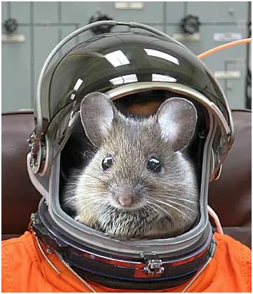
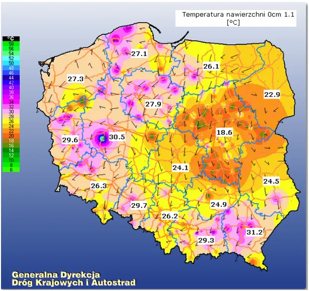
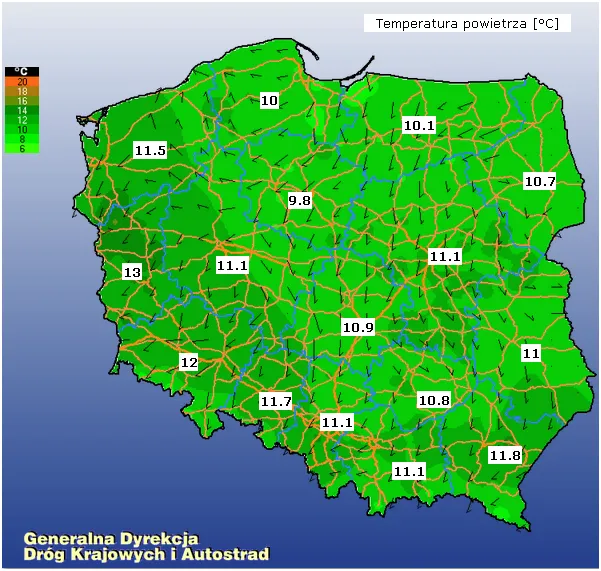
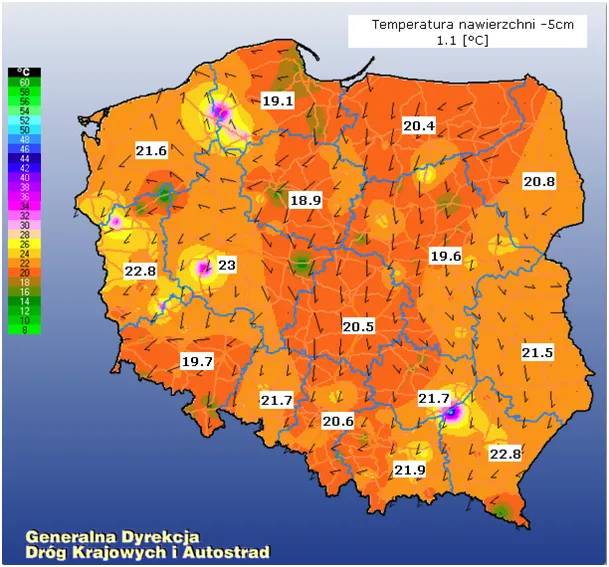
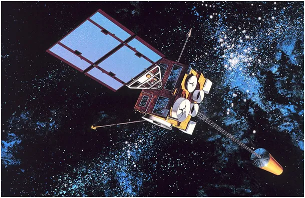

Stawiam na ssaki.
W południe, w połowie maja temperatura gruntu jest nawet o kilkanaście st. C wyższa niż powietrza. Myślę, że moi czytelnicy już doskonale wiedzą , że to nie Słońce nagrzewa atmosferę, ale grunt i oceany oświetlone przez Słonce.


Od wielu tygodni na mapach drogowców można obserwować punktowe anomalie, jak na pierwszej mapie na południe od Poznania. Tam powierzchnia gruntu w punkcie pomiarowym ma dobrze ponad 40 st. C a na mapie trzeciej widzimy więcej takich anomalii i to 5 cm pod powierzchnią. Mogą to być uszkodzone sensory, ale poziom temperatur ponad 35 st. C w godzinach nienasłonecznianych sugeruje, że w jamach z zainstalowanymi czujnikami mieszkają jakieś ssaki. Taka sucha norka, zapewne w plastikowej obudowie to idealne schronienie dla gryzoni z potomstwem, czy nawet jeży.

Korzystam z bardzo różnych źródeł danych i takie anomalie zawsze przykuwają uwagę wszystkich tylko nie operatora tych urządzeń. Od wielu tygodni, czy to słońce, czy to śnieg w tych punktach jest +30 st. C i więcej, a operator systemu nie zbadał, ani nie naprawił urządzeń.
Tego typu sytuacje dotyczą nie tylko rutynowych pomiarów na drogach. Znam przynajmniej 5 przypadków, gdy podczas startu czujniki i urządzenie satelitów meteorologicznych zostały uszkodzone i kalibrowano je na orbicie.
- Europejski satelita MTG-I1 2022 Kosmodrom Bajkonur w Kazachstanie w 2022 r.
- Meteor-M No.2-2 2019 Kosmodrom Wostocznyj, Sojuz-2.1b.
- GOES-17 (GOES-S) 2018 Przylądek Canaveral, Floryda, USA
- GOES-8 1994 Przylądek Canaveral, Floryda, USA
- Meteosat 8 (MSG-1) 2002 Gujana Francuska
Wszystkie te satelity są źródłami danych, które przesadzają o naszym widzeniu Ziemi. W przypadku rozstrojenia się urządzeń pomiarowych, a o takich przypadkach mówimy, inżynierowie mają poważny problem. Najzwyczajniej czujniki coś mierzą, ale nie wiadomo co. Kalibracja to np. proces ustawiania podziałki termometru. Mamy rurkę z rtęcią, rtęć ma poziom x w rurce, ale żeby dobrze przystawić podziałkę musimy znać temperaturę, czyli mieć drugi wzorcowy termometr. I mamy problem, satelita nie ma zapasowego instrumentu. W jednym z opisów takiej procedury natrafiłem na kulisy takiej procedury. Inżynierowie uradzili, że jak satelita będzie nad Saharą to oni wtedy wiedzą, że Sahara to ma tyle i tyle stopni i tak to ustawią.

Tu zapala mi się czerwona lampka, bo dane satelitarne podają wyniki pomiarów z dokładnością do jednej setnej stopnia i aby to było możliwe czujniki przed misją są długo kalibrowane w sterylnych laboratoriach, tymczasem na Saharze nie ma żadnych punktów pomiarowych. Dane z innych satelitów też nie są tożsame, bo nie ma szans, aby inny satelita mierzył dokładnie ten sam wycinek piasku, co nasz. Zatem nie ulegajmy złudzeniu, że "naukowcy" wszystko wiedzą jak Pytja. Kto nie czytał, niech zajrzy do afery z pomiarem lodu na biegunach. Zapraszam: https://pawelklimczewski.pl/2024/12/11/kryminal-pt-globalne-ocieplenie-z-satelita-unii-europejskiej-w-tle/
Paweł Klimczewski